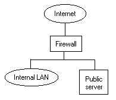
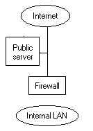
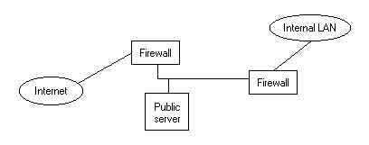

Kurt Seifried, [email protected]
A firewall is generally something that separates things and protects them from each other. Traditionally used in building to help contain fires and prevent their rapid spread the modern firewall is a computer running software that allows it to filter information passing through it. A firewall can work at several layers of the network, the highest level being application, and generally the lowest would be the datalink layer (MAC hardware address). Most firewalls operate at the network and transport layer, they examine the TCP-IP data packet and then usually make a decision based on the IP it came from, the IP it is going to, the port it came from, the port it is going to, or any combination of these. You can also look at the header options and block based on those. Rules typically follow the lines of "let anything connect to the mail server on port 25" or "block access from anywhere to any port from 1 to 1024". Firewalls working at the application level can filter based on content, checking for viruses, keywords, and so on.
Overview
There aren't to many alternatives to firewalls, by definition something that blocks traffic is generally classified as a firewall. While there are different levels of firewalls (applications, packet, etc.) they are all related closely in actual function, they take the data, inspect it, and then decide whether to pass it or not, and some "packet mangling" may take place as well (i.e. rewriting header information). Because of this design they share a common set of problems. All firewalls run an OS, usually UNIX based (such as FreeBSD or Linux) although NT can be used as well, which is (hopefully) stripped down (thus reducing the number of potential problems), and integrated with the OS, or sitting on top of it is a firewall package. The problem with this is all modern OS's have far more features and capabilities then most firewalls require, and many vendors of add on firewall packages such as Firewall-1 do not force the user to strip down the OS (meaning many admins do not). The result of this is there are numerous possible attacks against most firewalls, NAI's Gauntlet actually had a flaw that allowed remote attacker to gain full control of the firewall.
Beyond simple firewalling are firewalls that can require authentication (in the form of a username and password, or token based system) before allowing the user access. This way you can easily restrict who is allowed to access what services. This is important since basing access on IP is insecure, you can simply unplug a machine with a "trusted" IP address (say an administrators workstation), and then use that IP address on your own machine and have elevated access. The use of authentication also allows for tracking of user activity (be warned this is illegal in some countries/states, and generally speaking you must inform employees that they are being monitored).
Proxy servers
In addition to firewalls you can use a proxy server. If you force all users through a proxy you can more easily control content and filtering. For example by firewalling all outbound access to port 80 (the world wide web) and forcing users to go through a proxy server you can log what they are accessing, control access to it (for example lock out stock trading sites from 9am to 12am, and 1pm to 5pm, allowing them to trade after hours or during lunch). MS proxy is a decent example of a proxy server with good access controls (to note it is being replaced with Internet Security & Acceleration Server), you can allow access based on the userid, and protocol, so for example everyone in the company might be given www access, but only the administrators and tech support people are given ftp access, and no-one is given access to IRC. You can easily log all connection and object requests, allowing for analysis of the logs (keywords such as "sex", or competitors names, usage, and so on). You can set up pre-fetching for heavily used sites, for example management might rely on a number of news sites (such as news.com, and cnn.com) and you can enable pre-fetching which will retrieve the document before people actually request it (and when they do it will be available immediately).
Beyond firewalls
To compliment firewalls a new breed of product is now available. One such example is Whale Communication's "Airgap" technology, an appliance sits in-between the two networks and uses shared memory technology to transfer the data between the networks. Basically one server writes the data to the shared memory, the shared memory is then disconnected from that server, connected to the other and read. For all intense purposes it maintains a physical barrier between the two networks, but in such a way that moving data between the two is very fast and has a low latency (imagine someone swapping floppy disks between two machines really quickly). In addition to this the internal host can apply a variety of filtering to the data, a set of API's is available allowing you to build your own filters, or use pre-defined ones. Allowing only data for example that consists of 12 numbers, 20 alpha numerics and 4 more numbers in, and then a yes/no out would allow you to clear credit card numbers, and block pretty much any attack (exploiting a buffer overflow would be near impossible for example). Generally speaking these systems are not to expensive, a single Airgap appliance is about $50,000 US, far less then the cost of most security incidents.
Intrusion detection
In addition to using firewalls to block attacks you can use intrusion detection systems to detect attacks and react to them. At some point you will have to let data into your internal network (otherwise why bother having an internet connection at all). No matter how heavily you firewall (even if you deny all by default) it is still possible for attacks to get through. By monitoring the content of data you can detect attacks in progress, compromised machines behind the firewall sending out spurious data, and so on. Modern IDS systems typically consist of multiple monitoring stations connected to central servers that analyze the data, thus if an attacker probes for a weakness through one link, and then tries to exploit it via another there is a much better chance they will be detected. There are even companies that will handle the entire process for you, placing monitor stations at your location(s), collecting and analyzing the data, and providing assistance on how to deal with the attacks/etc. If you are on a tight budget there are OpenSource alternatives, snort and arachnids are one useful combination.
http://www.microsoft.com/isaserver/ - Internet Security & Acceleration Server
http://www.whalecommunications.com/ - Airgap
Security is no good if it isn't in the right place. Think about a modern office building, where are the doors with locks? The lobby doors can always be locked, and usually the doors on each floor have locks as well. If only the office doors had locks then it would take a lot more effort to secure the building (i.e. many more locks would be needed) as well as security guards to make sure no-one is trying to force a door. In a perfect world every door would have a strong lock and a guard sitting next to it with a shotgun, but since cost is a factor this won't happen. The same applies to networks, while there are many free firewalls available the cost of installing and maintaining a firewall on each machine would be high, it is much more efficient to have firewalls where your network connects to untrusted networks. As well you should consider the type of traffic a firewall will need to handle, the more traffic it must handle the more complex the rules will need to be, and the greater a chance an attacker can slip in.
Before or after?
It goes without saying that your internal LAN should have a firewall between it and the Internet. But what about servers that won't work properly unless machines on the Internet can connect to them? An Internet connection with no capacity for incoming email, would be very Spartan indeed (web servers and DNS are also usually hosted on-site in most cases). If you place the email server behind the firewall, on your corporate LAN then you must "poke" holes in the firewall to let email in. If an attacker manages to compromise the mail server then there is nothing between it and your internal LAN to slow down further attacks. If you place the Email server in front of the firewall, you can easily set up firewall rules to allow internal LAN hosts to connect to it and send/retrieve email. If an attacker compromises the mail server they will not be able to access the internal LAN, since there is a firewall.
|  One the attacker has gained access to the Public server they can easily attack the internal LAN | Attacker will have less problems attacking the public server, but cannot use it to attack internal LAN as easily |
In-between
For the best of both worlds you need two firewalls, on in front of your public servers, and one in-between the public servers and the internal LAN. This setup is usually refereed to as the "DMZ", because the zone in-between the two firewalls is untrusted and heavily restricted. Additionally you can setup application proxies (such as www and ftp proxies), then block outbound access from the internal LAN on the exterior firewall and force all clients to go through your application proxies (which can have anti-virus capabilities for example). The DMZ should be a relatively "quiet" zone, any hostile packets trying to enter it (from the Internet, or the Internal LAN) should be blocked at either firewall, increasing the effectiveness of any intrusion detection systems (there will be less false positives).
| An attacker would need to get through the first firewall, and the second one to penetrate the internal LAN |
But the DMZ concept is far from perfect too. It is common to have the public servers and the internal LAN served off the same link and firewalls, increasing the amount and types of traffic, and thus the complexity of the firewall rules. Ideally you would have a path from the internal LAN to a DMZ with the public servers that is only used for internal LAN to public servers traffic (i.e. website updates, retrieving email, etc.). There would be a second path from the internal LAN to another DMZ with proxy servers for Internet services (i.e. WWW, FTP) that is used for Internet traffic only. This would greatly reduce the complexity, on the "public" DMZ the only traffic would be services you provide, and on the "internet access" DMZ there would only be outgoing traffic with few or no incoming connections being required (the notable exception being FTP). This of course would require 4 firewalls, and two completely separate configurations, however the reduction in complexity (especially for large sites) is probably worth it. Also since the "public" servers are more likely to be attacked then the proxy servers surviving attacks (especially if you had separate Internet links for each) would be much easier.
Types of traffic
Generally speaking there are two types of traffic, inbound and outbound (if you see traffic going sideways call me). Usually incoming traffic will generate a response in the form of outgoing traffic, and vice versa. Ideally you should place limits on what ports foreign machines are allowed to connect to (i.e. locally ports 25, 53 and 80 are ok), and limits should be placed on which ports internal hosts can connect out to. This is very important with the growth of trojan horses and other "backdoors", attackers can send infected email and in a matter of minutes an entire corporation can be infected with a Melissa or "I love you" type virus. Imagine if it carried a payload such as Back Orifice 2000 (a popular Windows trojan) and was set to connect out to a certain host, from which it would take commands (such as "send me the contents of C:\ My Documents" or "log all keystrokes and email them to me"). The cost of cleaning up from such a problem, let alone any cost associated with lost or stolen data, passwords and other sensitive information is very high. By blocking (and logging) outgoing connections you can detect improper usage of the network for example outgoing connections to port 6667 would indicate a user is chatting on IRC, and potential security breaches, or it might be Back Orifice 2000 with the speak easy plugin broadcasting the machine it just infected. Splitting the traffic load between two firewalls (i.e. one for inbound and one for outbound) doesn't make any sense since you won't be able to keep state for connections. Splitting types of traffic (i.e. one for servers, and one for the internal clients) does make sense.
Summary
If protection isn't in the right place, it won't work. If you push all your traffic through one firewall you will end up with a very complicated ruleset and chances are it will have flaws. If you use to many firewalls or segment the traffic improperly you will create an administrative nightmare. One thing to remember, security is not static. You should be evaluating your firewalls, usage, complexity of the rules, maintenance issues and so on, and make changes as needed (and make sure these changes are logged and understood).
Oddly enough this is something many people don't think about a whole lot, in some cases you can simply deny everything and have a few specific allow rules which results in a pretty tight configuration. However it is more likely that you have specific blocking rules and allow most other things. Also this is usually based on port numbers (i.e. service) and destination, however source is also very important. Even if you only allow a few trusted IP addresses to say connect to your "secret" web server, an attacker can still spoof packets, and so on. You can reduce the risk by blocking IP addresses that are in "high risk" environments, such as Universities, foreign countries and so on (assuming of course you are not terribly interested in talking to them via the Internet).
Foreign sites
If your business is only concerned about North America for example then it might make sense to heavily restrict access from other countries such as Russia, and China. If you are securing network sites that are not providing public network services (such as WWW sites) then you should probably restrict access from network blocks like 24.* (cablemodem providers, a favorite jumping point for attackers). You may also wish to restrict access to external sites, for reasons including content or employee distractions.
For example by blocking access to login.oscar.aol.com (152.163.242.24, 152.163.242.28, 152.163.241.120, 152.163.241.128) you can effectively cripple AOL Instant Messenger (AIM) from working. If you wanted to block access to Freedom network you would block outgoing connections to ports: 51102/tcp and 51112/tcp.
If you have specific software or services you wish to block access to the best thing to do is install it on a test machine (preferably behind a firewall). You can then run the software and use "netstat" to find out who the machine is talking to, and if there is a firewall in-between you can closely monitor what it is connecting to and so on (add a logging rule for all packets to or from that host).
Internal sites
Chances are not all of your internal machines require access to the Internet, and by blocking them you can head off problems. Machines without Internet access cannot connect to "naughty" sites, and trojan horse software running on them cannot contact outside sites to report it is installed, or send stolen passwords. Any machines providing services to Internet users (such as DNS, WWW, Email) should b allowed access to the Internet (otherwise they will not work), although you may wish to restrict it, for example the mail server should only need to reply to clients that initiate connections, and only establish connections to other mail servers (port 25), there is no need for the mail server to establish connections to machines on any other port then 25. Thus if someone were to break into your mailserver they would only be able to attack other machines on a single port (port 25), instead of all 65,536 ports (and of course you would be able to quickly detect this type of behavior). Web servers should only need to answer queries to ports 80 (and 443 for secure web), and generally speaking do not need to establish outbound connections. By heavily restricting the outbound access of machines you can significantly reduce your exposure, and increase the chance of detecting a security incident.
Services
There are many services, thousands in fact. However some of these services are so common, and so dangerous that they warrant special attention. The most common problems are in what I call network infrastructure protocols. Things that almost all networks use such as DHCP, DNS, SNMP, LPR, NFS, SMB, which provide basic network management, or services such as file and print sharing. Generally speaking these do not need to be shared out across the Internet, and if remote users do need access to them (such as file and print sharing) they should be tunneled through a VPN (such as IPSec) and not allowed to go out in the clear.
23/tcp - telnet, cleartext authentication and sessions, should
not be used (replace with SSH).
37/tcp and udp - time, use ntp (Network Time Protocol) instead
67/tcp and udp - bootp server, should only be used locally
68/tcp and udp - bootp client, should only be used locally
69/tcp and udp - tftp (Trivial FTP), should only be used locally
79/tcp - finger, should only be used locally
110 and 111/tcp and udp - POP2 and POP3, if remote users need
access use SSL wrapped POP or VPN
143/tcp and udp - IMAP, if remote users need access use SSL
wrapped POP or VPN
161/udp - SNMP, attackers love this protocol
162/udp - SNMP-trap, attackers love this protocol
177/tcp and udp - xdmcp (X Display Manager Control Protocol,
restrict access or VPN
389/tcp - LDAP, restrict access or VPN
512, 513 and 514/udp and tcp - various remote services and
logging, restrict access or VPN
1812/tcp and udp - Radius, restrict access or VPN
And the list goes on and on. The decision tree should look like this:
Can we firewall it completely? If yes do so.
Can we restrict access to it to people via a VPN only (i.e.
IPSec)? If yes do so.
Can we firewall it restrictively (i.e. to "trusted
hosts")? If yes do so.
Can we restrict access to it from "risky" sources (i.e.
Canadian colleges, China, the USA)? If yes do so.
Basically what is the most restrictive thing you can do, and the service is still useful.
There are many common configuration problems with firewalls, ranging in severity and scope. By far the most common problems relate to what should be blocked or allowed. This is often problematic because needs change, you may need to allow video streaming for example, and unless done properly the addition of new firewall rules can seriously undermine the security provided by a firewall. Before any changes are made to a firewall you should sit down with whoever is responsible, and ensure they will not have unintended side effects. I find the best way to do this is to print out the rules and make sure the new rules fit logically into the existing structure. For example my rules typically start with rules to block private and non routed network (like 10.*, 127.*, and so on), followed by ICMP related rules, then I have rules that allow traffic in (like SSH, Email, WWW and so on), and then depending on the security required I block the first 1024 ports (which are usually the most interesting ones), or I have a default deny policy. If I need to add a new rule to let in secure WWW traffic for example I would not add it to the front of the list, I would add it in the section with the specific allowals. Adding it to the front of the list would result in attackers being able to send packets to port 443 (secure WWW) from non routed addresses. If your firewall has multiple administrators this can be especially dangerous. You should sit down together and write out a document describing how and why rules are in place, ideally this document should be online so it can be referred to, and modified as needed (always document changes!).
Another common problem is people not blocking broadcast traffic on firewalls. Broadcast traffic almost never needs to be passed through firewalls, and generally speaking traffic sent to the network address should not be passed either (in general this means anything ending in a 0 or 255 should be blocked, your netmasks may be different so make sure it's correct). Attackers will often try to use broadcast ICMP traffic to attack other sites, this is called "smurfing". By pinging your broadcast address instead of one host responding, many hosts respond, all they need to do is forge the return address, and some unwitting victim gets blasted by your network. Windows machines are also in the habit of sending out a lot of broadcast traffic, the default installs of pretty much every Microsoft OS results in it advertising it's name and any services it is running, this is especially dangerous for NT servers. On a modern network there should be very little broadcast traffic.
Firewalls should block certain network management protocols, especially bootp/bootpc, SNMP and RPC based services. These are services attackers will attempt to compromise because they are almost installed, and in many cases they will not be configured securely (i.e. SNMP community names of "public" or "private" are far to common). Windows file sharing should generally not be used across the Internet, blocking ports 135 to 139 (udp and tcp) at the firewall is often a good idea, if people do need access to their files this should be done through a virtual private network. Ideally the only things let into a corporate network should be public network services like DNS, Email and WWW (and even then they should only be allowed to a few secured servers), and returning packets from client connections. VPN technology has matured to the point where there is not excuse not to use it to connect sites securely that need to transfer sensitive information such as corporate files.
Management of firewalls is also often handled poorly. Telnet and R services should never be used. Web based admin tools should not be used unless they provide an encrypted link (i.e. https://), or through a VPN. Telnet, R services and unencrypted web sessions mean that the passwords and so on can be gathered by an attacker, or if they are sufficiently skilled they can hijack the connection and insert a few commands before it is dropped (like flush all rulesets). Any management should be done from a handful of highly secured workstations that are NOT equipped with mail readers, web browsers or any unneeded software. There are far to many security problems in today's mail readers, web browsers and other application software. If an attacker is able to seize control of the administration workstation they can run a key logger, network sniffer or simply seize control of it with programs like Back Orifice 2000. For day to day administration of the firewall (i.e. service packs, updates, and so on) you should install OpenSSH or the commercial version of SSH if it is UNIX, and if it is NT based you should administer it locally or use a remote administration tools that support the GUI (i.e. PCAnywhere and VNC) in conjunction with a VPN package (not PPTP!). Another secure method is to manage the firewall "out of band", i.e. use the serial console on a sparc/Cisco/etc., or PPP (or similar) on an NT box, this allows you to completely disable all network services on the firewall, including remote logins, making it very difficult for an attacker to get in using them (since they do not exist). Additionally when someone attacks your firewall through a denial of service there is a better chance of being able to login and correct it. If you decide to use a serial console/PPP and a modem then make sure the modem is secured, the best way is to enable callback support, this way an attacker would need to go to great lengths to connect to it.
Firewalls are an extremely useful component in any network security plan, they have gone from "only the government needs firewalls" to "what is the best firewall for my home computer?". Unless they are setup correctly, and managed correctly however they are worse then useless (you will think you are secure when in fact you are not).
Last updated 25/10/2001
Copyright Kurt Seifried 2001